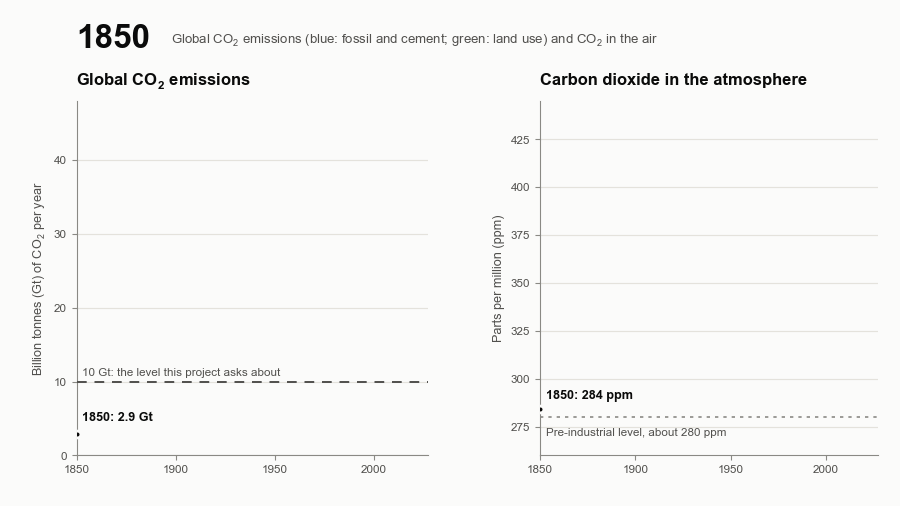
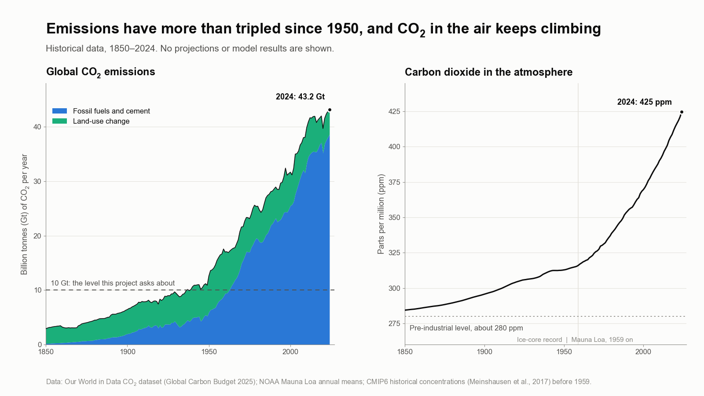

From 40 to 10 Gigatons: Global Carbon Flow
Can the world cut carbon dioxide emissions from about 40 to 10 billion tonnes a year, and would the air respond?
- Manuscript in preparation
- 2026–present
- Energy transition modeling
- Climate
- Emissions
- Decarbonization

In plain English
The world now emits roughly 40 billion tonnes (gigatons) of carbon dioxide a year. Most climate targets aim for net zero, but that goal can feel out of reach. This project asks a narrower question: if emissions fell to about 10 gigatons a year, roughly the world's fossil-fuel emissions in the early 1960s, would the amount of carbon dioxide in the atmosphere stop rising? And which regions, fuels and sectors would have to change most to get there?
The team built a transparent framework from open data (Our World in Data and NOAA). It groups countries by development path, applies reduction rates to coal, oil, gas, cement and land-use emissions, and carries each pathway through a simple atmospheric model so pathways are judged by their effect on concentration, not on emissions totals alone. Results are checked against established climate models, and the whole analysis re-runs from a single command. A manuscript is in preparation.
Main points
- Built a country-grouped emissions model from open Our World in Data and NOAA records.
- Split emissions by source (coal, oil, gas, cement, land-use change) and by sector, including hard-to-decarbonize industry and heavy transport.
- Coupled every pathway to a simple atmospheric mass-balance model to track carbon dioxide concentration, not just emissions.
- Cross-checked the simple model against two widely used reduced-complexity climate models, FaIR and Hector.
- Separates the emissions level at which atmospheric carbon dioxide stops rising from the level at which it starts to fall.

People
- Erick C. Jones Jr., PhD, PEPrincipal Investigator · SEAR Lab directorin
Fall 2026 team: names to be added from the lab personnel sheet. Profiles marked in link to LinkedIn. More past and present lab members are on the SEAR Lab team page.